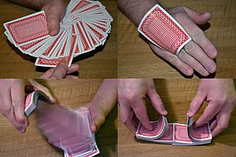

El juego básico es el de tomar una carta, perderla en la baraja y ser adivinada posteriormente por el mago. Pero hoy en día existen miles de efectos y juegos diferentes de alto nivel tales como predicciones, transposiciones, desapariciones, ordenaciones, jugadas de póquer (o de cualquier otro juego), lectura de pensamiento, coincidencias, transformaciones todo ello con cartas de diversos tipos y tamaños y cuyo objetivo último es provocar el asombro del público. Entre los grandes cartomagos de la historia se pueden citar a Dai Vernon, René Lavand, Tony Slydini, Ricky Jay, Stéfano Fiorani y entre los españoles cabe destacar a los campeones mundiales Arturo de Ascanio, Juan Tamariz, Pepe Carroll y Miguel Puga. Antes de ser mundialmente famoso por sus fugas, Houdini seautoproclamó como "El rey de las cartas".